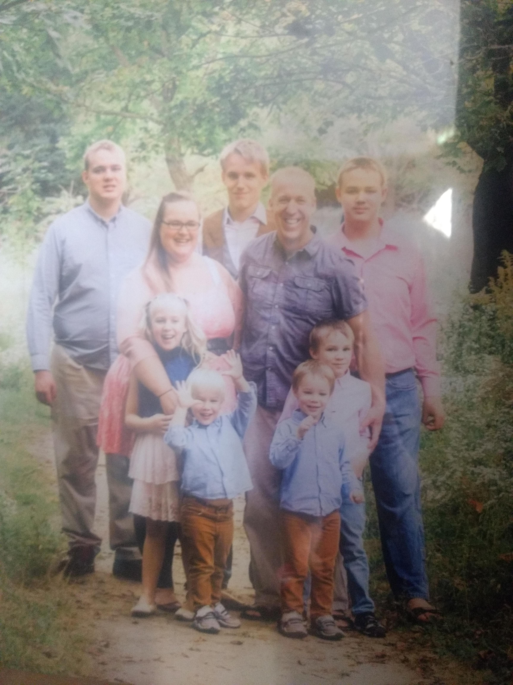

As I already mentioned, my name is Levi VanDyk, and I currently live in Cambridge, Ontario.
I live with my family of 9. 5 brothers, my sister, and my mother and father.

I am currently enroled in the VLC and working through my Grade 12 courses
I have a casual interest in history and coding, and I like volenteering for initatives I believe in.
My favourite thing to do in my spare time is to play mods of video games.
I'm also colourblind, so ya, don't ask me what colour this is.
It's orange, right?